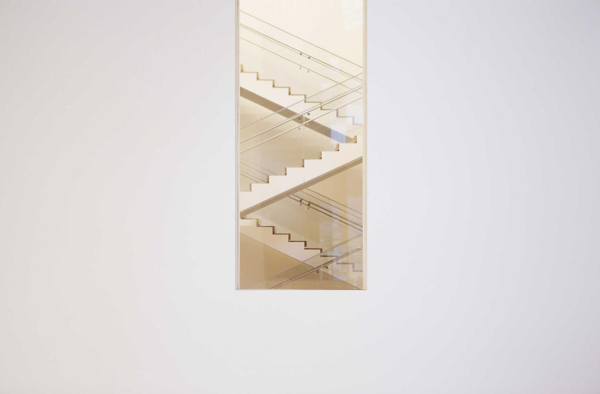

Two ways to read a room
Incident readings measure the light falling on a subject. A reflected reading follows the surface you point at.


Incident readings measure the light falling on a subject. A reflected reading follows the surface you point at.
